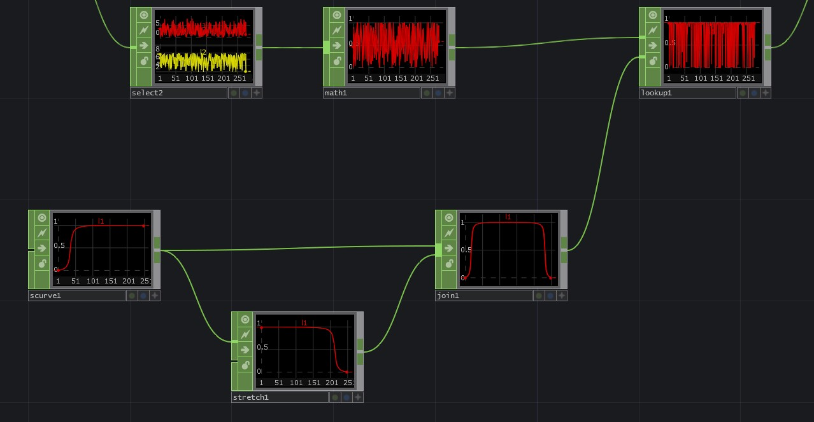

Complex rotation
Object CHOP | Calculating Bearing with Feedback
Moving a step beyond simply pointing to one reference position, this example looks at how we might be able to calculate a bearing value for each instance individually. Here we use a feedback CHOP to feed our object CHOP with a previous value — from our current position and our previous position we can derive a heading that represents the a vector between those two points. In this example we derive a bearing from that information.

Notice the order of operations here that ensures our rotation is correctly calculated. For 278 instances the object CHOP calculation is roughly .27ms — so it’s worth noting that there are limits to the number of simultaneous objects you’ll be able to calculate using this approach.
Another interesting approach in this example is the mechanism used for providing an ease-in and ease-out to our arrows. A math CHOP is used to derive the normliazed life value by dividing the current life by the total life length. The resulting value here will be from 0-1 representing the birth to death of a particle. Next we can use an s-curve CHOP with a join SOP to create a nice ease-in/out lookup that’s then used by the lookup CHOP to give smooth in and out transitions for our arrows.

Tested in TouchDesigner099 2020.23680
Updated 06.03.20
Matthew Ragan
Zoe Sandoval